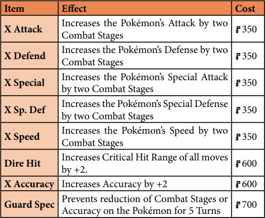
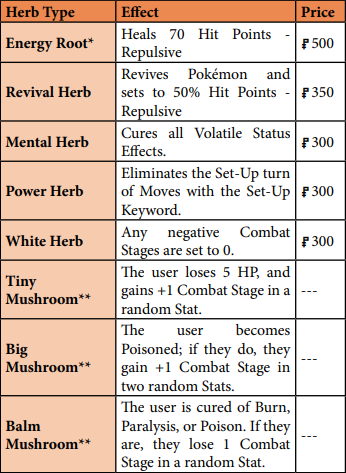

<!DOCTYPE html>
<html lang="pt-br">

<head>

    <meta charset="UTF-8">
    <meta name="viewport" content="width=device-width, initial-scale=1.0">
    <title>Pokémon Lavender</title>
    <link rel="stylesheet" href="../style/style.css" type="text/css">
    <link rel="shortcut icon" href="../assets/img/icons/page.png" type="image/x-icon">

    <nav>
        <ul>
            <li> <a href="../index.html"> Home </a> </li>
            <li> <a href="CreatingCharacters.html"> Criando Personagens </a> </li>
            <li> <a href="HabilidadesVantagensRecursos.html">Habilidades, Vantagens e Recursos</a></li>
            <li> <a href="TrainerClasses.html">Classes de Treinador</a></li>
            <li> <a href="Pokemon.html"> Pokémon</a></li>
            <li> <a href="PlayingGame.html"> Jogando o Jogo</a></li>

            <li> <a href="Combate.html">Combate</a></li>
            <li> <a href="PokemonContest.html"> Pokemon Contest </a> </li>
            <li> <a href="GearItens.html">Equipamentos e Itens</a></li>
            <li> <a href="Indice.html">Índice e Referências</a></li>
            <li> <a href="RunningGame.html"> Andando o Jogo</a></li>

        </ul>
    </nav>
</head>

<body>
    <main>
        <div class="anterior">
            <p>Capítulo Anterior: <a href="PokemonContest.html"> Pokémon Contest</a></p>
        </div>

        
        <h1>Equipamentos e Itens</h1>
        <div id="Essenciais_para_treinadores">
            <h2>Essenciais para Treinadores</h2>
            <p>Vários itens são absolutamente essenciais para a jornada de um
                Treinador pelo mundo Pokémon. Normalmente, um Treinador que
                recebe um Pokémon pela primeira vez de um Professor patrocinador
                ou da organização da Liga Pokémon receberá um pequeno pacote
                de equipamentos para começar. Outras vezes, os Treinadores juntam
                dinheiro para comprar o básico antes de começarem a aventura.
            </p>
            <div id="PokeBolas">
                <h3>Pokébolas</h3>
                <p>Pokébolas são peças de tecnologia especializadas que capturam
                    Pokémon, transformando-os em uma forma de energia e armazenando-os em uma bola de metal encolhível.
                    Eles vêm em muitas variedades,
                    projetados para diferentes situações.
                    Alguns são mais adequados para capturar determinados tipos de
                    Pokémon, enquanto outros têm efeitos especiais na captura.
                </p>
                <p>Lançar Pokébolas é um Ataque de Status AC6, com alcance igual ao
                    Alcance de Arremesso do Treinador: 4 mais sua Classificação de
                    Atletismo. Resolva o ataque como faria com qualquer outro. Se errar,
                    a Pokébola cai inofensivamente no terreno além do alvo. Se acertar
                    e o Pokémon puder ser capturado, você faz uma jogada de captura
                    rolando 1d100 e subtraindo o nível do treinador. O Tipo de Bola
                    também modificará o Rolamento de Captura. As Pokébolas podem
                    chamar Pokémon de volta a 8 metros de distância.
                </p>
                <p>As Pokébolas nunca podem capturar um Pokémon que tenha sido
                    reduzido a 0 Pontos de Vida ou menos. O processo de energização
                    é muito perigoso para Pokémon gravemente feridos e, portanto, é
                    interrompido por um dispositivo de segurança embutido em todas as
                    Pokébolas e peças de Pokébola vendidas no mercado para automontagem.
                    E, claro, as Pokébolas não são ativadas contra Pokémon de sua
                    propriedade já registrados em um Treinador e uma Bola!
                </p>
            </div>
            <div id="PokeDex">
                <h3>PokéDex</h3>
                <p>Este computador portátil com câmera avançada e software de
                    reconhecimento de imagem é fornecido aos novos treinadores no
                    início de sua jornada. Como Ação Padrão, um Treinador pode usar
                    seu Pokédex para identificar um Pokémon em um raio de 10 metros
                    usando o scanner do Pokédex. Fazer isso revela a altura e o peso
                    médios da espécie, a altura e o peso do indivíduo alvo, movimentos
                    que a espécie aprende através do Level Up e alguns breves fatos
                    sobre o comportamento típico da espécie.
                </p>
                <p>Essas máquinas também podem funcionar como telefones celulares,
                    rádios e navegadores portáteis de Internet, como os smartphones
                    típicos. Outros aplicativos podem ser instalados para conceder-lhes
                    usos adicionais. Eles custam US$ 12.000 ou mais, mas na maioria
                    das circunstâncias devem ser disponibilizados gratuitamente para
                    personagens iniciantes.
                </p>
            </div>
            <div id="Tabela_de_Pokebola">
                <h3>Tabela de Pokébolas</h3>
                <p>As Pokébolas básicas são vendidas por US$ 250, as Great Balls por US$ 400 e as Ultra Balls por US$
                    800. Todas as bolas especiais também são
                    normalmente vendidas por US$ 800, embora nem sempre estejam disponíveis em todas as lojas.
                </p>
                <div class="obs">
                    <p>
                        Por que as Pokébolas são tão baratas para peças de tecnologia avançada, especialmente em
                        comparação
                        com outros itens disponíveis no manual
                        Pokémon Tabletop United? Bem, em grande parte porque o jogo depende muito de sua fácil
                        acessibilidade.
                        Se você precisar de um motivo básico, a produção de Pokébolas provavelmente é subsidiada pelo
                        governo devido à sua onipresença
                    </p>
                </div>
                
            </div>

            <div id="Equipamento_de_viagem">
                <h3>Equipamento de Viagem</h3>
                <div id="Isca">
                    <p><strong>Isca:</strong> A isca é um pedaço de comida saboroso e de cheiro forte, projetado
                        para atrair Pokémon. Pode ser usado de duas maneiras; para atrair
                        Pokémon ou para distrair Pokémon. A isca pode ser comprada por US$
                        250.</p>
                    <p>Para atrair Pokémon, coloque a isca em uma rota. Depois disso, a cada
                        15 minutos, role 1d20 até obter 15 ou mais.
                        Se você rolar 3 vezes sem sucesso, a isca perde a potência e falha. Se
                        você tiver sucesso, entretanto, um Pokémon aleatório, com base na
                        discrição do seu Mestre, aparecerá.
                        O Pokémon atraído pela isca geralmente deve ser de nível comparável
                        ao Pokémon do grupo. A isca é frequentemente usada para pescar dessa
                        forma.
                    </p>
                    <p>Para distrair o Pokémon, jogue-o em um Pokémon Selvagem como uma
                        Ação Padrão. O alvo deve então fazer um Teste de Foco com DT 12. Se
                        falhar, o Pokémon desiste de sua próxima Ação Padrão para comer a
                        comida.
                    </p>
                </div>
                <div id="Frasco_de_Coleta">
                    <p>
                        <strong>Frasco de coleta:</strong> Um frasco de vidro simples e selável. Útil ao coletar
                        itens de Pokémon, como Honey de Pokémon com a habilidade Honey
                        Gather ou MooMoo Milk de Pokémon com a habilidade Milk Collection.
                        Disponível em quase todos os lugares e custa US$ 100.
                    </p>
                </div>
                <div id="Kit_de_primeiros_socorros">
                    <p>
                        <strong>Kit de primeiros socorros:</strong> necessário para usar o recurso Conhecimento
                        em Primeiros Socorros. Ao drenar 1 PA, qualquer Treinador pode fazer
                        um Teste de Educação Médica em um alvo como uma Ação Estendida.
                        O alvo ganha Pontos de Vida iguais ao resultado e é curado de
                        Queimadura, Veneno e Paralisia. Custa $ 500.
                    </p>
                </div>
                <div id="Isca_de_pesca">
                    <p><strong>Isca de pesca:</strong> em vez de isca, alguns treinadores podem optar por usar
                        uma isca de pesca ao tentar pescar. As iscas de pesca funcionam como
                        a isca, mas podem ser usadas várias vezes.
                        Se a linha quebrar ou o peixe fugir, eles poderão levar sua isca com eles.
                        As iscas de pesca custam $ 1.500.
                    </p>
                </div>
                <div id="Sela">
                    <p>
                        <strong>Sela:</strong> As selas ajudam os treinadores a montar Pokémon. Eles são
                        criados com uma espécie específica de Pokémon em mente, e apenas
                        Pokémon com esse tipo de corpo podem usar a sela.
                    </p>
                    <p>Um tipo de sela comum serve para Ponyta, Rapidash, Blitzle e Zebstrika,
                        por exemplo. As selas concedem um bônus de +3 em todos os testes de
                        habilidade feitos para montar Pokémon ou para permanecer na sela
                        quando atingido por um ataque. Custa $ 2.000.</p>
                </div>
                <div id="Corda">
                    <p>
                        <strong>Corda:</strong> A corda tem muitos usos diferentes e, portanto, é um equipamento
                        popular para exploradores, campistas e caminhantes. A corda só pode
                        ser danificada por ataques do tipo Fogo ou ataques feitos com objetos
                        pontiagudos – facas, espadas, dentes afiados e movimentos como
                        Scratch, Slash, Leaf Blade, Razor Leaf, etc.
                    </p>
                    <p>A corda pode ser comprada em qualquer comprimento de 25 pés até 300.
                        Os preços listados abaixo refletem 25 pés de corda; simplesmente
                        multiplique o preço adequadamente por mais.
                    </p>
                    <ul>
                        <li><strong>Corda Básica:</strong> Corda Básica de Fibra. Tem uma resistência à tração
                            de 35 kg ou 77 libras. Possui 5 Pontos de Vida. Custa $ 100</li>

                        <li><strong>Corda Utilitária:</strong> Corda Utilitária Trançada. Tem uma resistência à
                            tração de 80 kg ou 176 libras. Possui 20 Pontos de Vida e 10
                            Redução de Dano. Custa $ 200</li>

                        <li><strong>Corda Robusta:</strong> Corda Robusta com resistência à tração de 225 kg ou
                            aproximadamente 500 libras. 30 pontos de vida e 20 redução de
                            danos. Custa $ 400</li>
                    </ul>
                </div>
                <div id="Saco_de_dormir">
                    <p>
                        <strong>Saco de dormir:</strong> Um saco de dormir padrão. Custa $ 1.000 o single ou $
                        1.800 o duplo.
                    </p>
                </div>
                <div id="Barraca">
                    <p><strong>Barracas:</strong> Barracas externas padrão. Fornece proteção contra os
                        elementos da natureza. Custa $ 400 por metro cúbico.</p>
                    <p>(Uma barraca pequena para uma pessoa teria cerca de 1m x 1,5m x
                        1,5m, ou 2,25 metros cúbicos – o que significa 900 no preço.)</p>
                </div>
                <div id="Isqueiro">
                    <p><strong>Isqueiro:</strong> Para criar chamas rapidamente. Um isqueiro comum de loja de
                        conveniência custa US$ 150; um isqueiro à prova d’água custa US$ 1.000.
                    </p>
                </div>
                <div id="Lanterna">
                    <p><strong>Lanterna:</strong> Para, você sabe, ver. No escuro. Sim.</p>
                    <p>Custa US$ 200 por uma lanterna normal; + $ 400 para torná-lo à prova
                        d'água.
                    </p>
                </div>
                <div id="Filtro_de_agua">
                    <p><strong>Filtro de Água:</strong> Pode garantir que a água do rio ou lagoa esteja limpa
                        para beber depois de ser filtrada. Custa $ 500.
                    </p>
                </div>
                <div id="Repelente">
                    <p>
                        <strong>Repelentes:</strong> Repelentes podem ser pulverizadas em si mesmo
                        para afastar os selvagens com um cheiro sutil que irrita muito os
                        Pokémon. É melhor não esperar que seu próprio Pokémon
                        suporte o cheiro enquanto usa Repels. A maioria dos Pokémon
                        selvagens não incomodará você quando você aplicar Repel em si
                        mesmo e desaparecerá antes mesmo de você se aproximar.
                    </p>
                    <p>Pulverizar um Pokémon selvagem diretamente com Repel fará
                        com que esse Pokémon, se o Repel puder afetar Pokémon desse
                        nível, se afaste imediatamente do usuário tanto quanto o Pokémon
                        for capaz como uma Interrupção, perdendo sua próxima Ação de
                        Mudança. Pulverizar um Pokémon com Repel é um ataque de
                        status AC6.
                    </p>
                    
                </div>
                <div id="Medicamentos">
                    <h3>Medicamentos</h3>
                    <p>Poções e outros Itens Restauradores Básicos são uma maneira útil
                        para os Treinadores manterem seus Pokémon em forma de combate
                        sem precisar retornar a um centro Pokémon toda vez que encontrarem
                        um Pokémon selvagem furioso. Poções são vendidas em pequenos
                        frascos de spray descartáveis que, quando borrifados em um Pokémon,
                        esterilizam e curam feridas.
                    </p>
                    <p>Poções e outros Restauradores Básicos podem ser usados tanto em
                        Pokémon quanto em Humanos para reparar tecidos danificados e selar
                        feridas. Se o frasco inteiro da Poção não for usado, ela não terá efeito
                        no Pokémon.
                    </p>
                    <p>Cuidado com medicamentos “repulsivos” ! Eles diminuem a lealdade
                        de um Pokémon com o uso repetido.
                    </p>
                    <p>A maioria desses itens está disponível para venda em PokéMarts. Eles
                        são equipamentos essenciais aos quais os Treinadores aventureiros
                        precisam ter acesso enquanto estão na estrada, longe de qualquer
                        Centro Pokémon.
                    </p>
                    

                    <div id="X-Itens">
                        <h4>X-Itens</h4>
                        <p>Os X-Items, por outro lado, são um pouco mais raros, muitas vezes
                            vendidos apenas em lojas especializadas ou grandes centros comerciais.
                            Ao contrário dos itens Restauradores Básicos, eles funcionam apenas
                            em Pokémon – não em Treinadores – e são usados para aumentar os
                            Estágios de Combate em batalha, em vez de curar feridas. Seu efeito
                            dura até o final do encontro.
                        </p>
                        
                    </div>
                </div>

                <div id="Usando_itens">
                    <h3>Usando Itens</h3>
                    <p>Aplicar Itens Restauradores, ou X Itens , é uma Ação Padrão, que faz
                        com que o alvo perca sua próxima Ação Padrão e Ação de Turno, a
                        menos que o usuário tenha o Recurso “Treinamento Médico”
                        O alvo destes itens pode recusar-se a ficar parado e ser curado;
                        nesse caso, o item não é usado e o alvo não desiste de suas ações.
                        Se você usar um Item Restaurador em si mesmo, será uma ação de
                        Rodada Completa, mas você não perderá nenhuma ação adicional.
                        Alguns Itens podem operar sob regras diferentes, se indicado em sua
                        descrição.
                    </p>
                </div>
                <div id="Bandagens_e_Cataplasmas">
                    <h3>Bandagens e Cataplasmas</h3>
                    <p>As bandagens são suprimentos médicos importantes para
                        treinadores viajantes e não são exatamente iguais a outros itens
                        restauradores.</p>

                    <p>As bandagens são aplicadas como ações estendidas em Pokémon
                        ou treinadores. As bandagens duram 6 horas; quando aplicados,
                        eles dobram a Taxa de Cura Natural de Pokémon ou Treinadores, o que
                        significa que um Pokémon ou Treinador irá curar 1/8 de seus Pontos de
                        Vida a cada meia hora.
                    </p>

                    <p><strong>As bandagens também curam imediatamente um ferimento se
                            permanecerem no lugar por toda a duração.
                        </strong></p>

                    <p>Se um Pokémon for danificado ou perder pontos de vida de alguma forma,
                        as bandagens param de funcionar imediatamente.
                    </p>

                    <p>As bandagens podem ser encontradas até mesmo em pequenas lojas de
                        conveniência por US$ 300. Os cataplasmas têm o mesmo efeito que as
                        bandagens, mas causam coceira e irritação na pele – eles podem diminuir
                        a lealdade dos Pokémon se usados com muita frequência, assim como os
                        remédios repulsivos.</p>

                    

                    <div class="obs">
                        <p><strong>Nota:</strong> Múltiplas Bandagens podem ser usadas ao longo do dia para curar
                            ferimentos, mas apenas 3 Ferimentos podem ser removidos por dia através
                            de qualquer combinação de Itens, Recursos ou Cura Natural.</p>
                        <p>As bandagens são extremamente úteis para caminhadas prolongadas na
                            natureza, onde você pode acumular vários ferimentos ao longo dos dias
                            sem ver um Centro Pokémon.
                        </p>
                    </div>
                </div>

                <div id="Itens_alimentares">
                    <h3>Itens Alimentares</h3>
                    <p>Os itens alimentares são exatamente o que parecem.
                        De longe, a maior categoria de alimentos são as berries,
                        mas também existem muitos outros tipos
                        de alimentos. Barras de chocolate e refrescos são
                        comumente vendidos em PokéMarts. Sobras ou Lama
                        Preta devem ser encontradas em lojas mais especializadas.
                    </p>
                    

                    <div id="Lanches">
                        <h4>Lanches</h4>
                        <p>Lanches podem ser consumidos a qualquer momento por um Pokémon ou
                            Treinador como uma Ação Estendida para conceder um Bônus de Digestão.
                            Um Pokémon ou Treinador só pode ter um Bônus de Digestão
                            armazenado por vez, a menos que tenha a Habilidade Gula e tenha
                            negociado esse Bônus durante a batalha para usar o efeito do
                            Lanche. Berries são consideradas lanches.
                        </p>
                        <p>Alguns Lanches exigem que uma certa condição seja atendida
                            antes que um Bônus de Digestão possa ser trocado. Por exemplo,
                            Bônus de Digestão de Berries não podem ser trocados a menos
                            que o usuário esteja com 50% de Pontos de Vida ou menos ou
                            a menos que o usuário esteja sofrendo de uma Aflição de
                            Status que o Buff de Digestão de Berry pode curar. Algumas Berries
                            especificam condições alternativas, como receber um certo tipo de
                            dano ou ser atingido por um tipo de ataque.
                        </p>
                        <p>Barras de chocolate e sobras são as outras duas formas mais comuns de
                            lanches. Os chefs, entretanto, são capazes de criar diversas variedades de
                            lanches usando ingredientes.
                        </p>
                    </div>
                </div>
                <div id="Itens_de_Refresco">
                    <h3>Itens de Refresco</h3>
                    <p>Tanto Pokémon quanto Treinadores adoram relaxar e comer alguma coisa. Refrescos são itens que
                        concedem seus efeitos quando consumidos como uma
                        Ação Estendida fora do combate.</p>
                    <p>Embora eles não possam curar rapidamente como as Poções, eles
                        são uma alternativa mais barata para curar fora da batalha. Um
                        Pokémon ou Treinador só pode consumir um refresco por meia
                        hora, a menos que tenha a habilidade Gula.</p>
                    
                </div>
                <div id="Comidas_diversas">
                    <h3>Comidas Diversas</h3>
                    <p>Os alimentos nesta categoria são basicamente apenas alimentos fofos; eles são itens consumíveis
                        que requerem uma Ação Estendida para serem consumidos,
                        têm efeitos variados e não afetam quantos Lanches ou Refrescos você pode comer ou beber.</p>

                    <p><strong>Comida para Bebê:</strong> Um alimento nutritivo que faz com que os jovens Pokémon
                        cresçam rapidamente. Quando consumido, aumenta o ganho de experiência de
                        Pokémon de nível 15 ou inferior em 20% pelo resto do dia.</p>
                </div>
                <div id="Apricorn_Berries_e_Ervas">
                    <h3>Apricorn Berries e Ervas</h3>
                    <p>Berries e ervas são um tipo específico de lanche que cresce naturalmente em todo o mundo. Algumas
                        Berries, como as Oran Berries, são muito comuns,
                        enquanto outras são muito raras. As ervas em geral tendem a ser raras na natureza.
                    </p>
                    <p>Berries comuns são facilmente encontradas em lojas de suprimentos Pokémon, supermercados e
                        similares. Berries e ervas raras só podem ser encontradas
                        em lojas especializadas.</p>

                    <p>Apricorn, Berries e Ervas podem ser cultivadas por um Treinador com as Características ou
                        Bordas
                        apropriadas, desde que ele tenha acesso a espaço
                        suficiente para plantar suas Plantas.</p>

                    <p>Depois de plantada, a planta leva dois dias para amadurecer. Depois de atingir a maturidade, o
                        cuidador da planta deve rolar o Rolo de Rendimento da
                        planta todos os dias. Eles ganham um número de Berries (ou Ervas, Apricorn, etc.) igual ao
                        resultado do Teste de Rendimento; se o resultado for zero
                        ou um número negativo, nenhuma Berries será recebida naquele dia. </p>

                    <p>No entanto, os Rolos de Rendimento podem ser modificados pela Qualidade do Solo . Os Rolamentos
                        de Rendimento acima assumem uma Qualidade
                        do Solo +0. Produtores Portáteis, ou locais naturais excepcionalmente férteis, têm uma Qualidade
                        do Solo de +1, o que significa que todas as Plantas que
                        crescem lá aumentam os Rolos de Produção em +1. E muitos lugares têm qualidade de solo
                        consideravelmente PIOR (boa sorte cultivando frutas na areia;
                        note que provavelmente não vai funcionar).</p>

                    <p>A <strong>cobertura morta</strong> pode ser usada para aumentar temporariamente a qualidade do
                        solo; pode ser
                        aplicado a uma planta para aumentar a qualidade do
                        solo de uma planta em +1 para o dia seguinte. Isso não pode fazer com que a Qualidade do Solo
                        ultrapasse +2. A cobertura morta custa $ 200 por unidade.</p>
                    <div class="flexbox">
                        <div class="flex-itens"></div>

                        <div class="flex-itens"></div>

                    </div>

                    <div id="Apricorn">
                        <h4>Apricorn</h4>
                        <p>Apricorn são frutas que podem ser transformadas em Pokébolas de
                            Appricorn. Encontrar um ferreiro para fazê-los nem sempre é fácil.
                            Geralmente é mais simples comprar as Pokébolas nas lojas.
                        </p>
                        
                    </div>
                    <div id="Ervas">
                        <h4>Ervas</h4>
                        <p>As ervas têm efeitos variados, desde atuar como itens restauradores
                            repulsivos até dar vantagens únicas aos Pokémon no meio da batalha.
                            Energy Roots e Revival Herbs são usados como itens restauradores em
                            batalha. Ervas mentais, poderosas e brancas são lanches. Cogumelos
                            são itens retidos e consumidos como uma ação de turno em combate.</p>
                        <figure>
                            <figcaption>*Raízes Energéticas podem ser cultivadas e colhidas como ervas, mas não
                                são lanches. <br>
                                **Cogumelos podem ser identificados com um Teste de Sobrevivência DT
                                20. Se identificado, você pode rolar para ver quais estatísticas o cogumelo
                                afeta com antecedência.
                            </figcaption>
                        </figure>
                    </div>

                    <h4>Tabela das Berries</h4>
                    
                    
                    
                    <p>* Treat Berries cura 1/8 do HP máximo do Pokémon. Se o usuário gostar
                        do sabor do Treat, ele cura 1/6. Se o usuário não gostar do sabor da
                        guloseima, ele ficará confuso.
                    </p>
                    <p>* As Berries Supressoras reduzem o Stat Base indicado em 1 quando
                        consumidas por um Pokémon. Este efeito só funciona se o treinador do
                        Pokémon desejar.
                    </p>
                    <p>*Berries que enfraquecem um tipo de movimento permitem ao usuário
                        trocar seu bônus de digestão para conceder um passo de resistência
                        quando atingido por um movimento do tipo indicado.
                    </p>
                </div>
            </div>
        </div>
        <div id="Kits_de_Crafting">
            <h2>Kits de Crafting</h2>
            <p>Esses itens são necessários para usar certas vantagens e recursos de
                fabricação ou ajudam muito em seu uso, encontrando itens de matériaprima.
            </p>
            <div id="Conjunto_de_Quimica">
                <p><strong>Conjunto de Química:</strong> Usado para criar Repels, Poções e outros
                    objetos. Custa $ 1.000.</p>
            </div>

            <div id="Conjunto_de_Culinaria">
                <p><strong>Conjunto de Culinária:</strong> Usado por Chefs para criar Lanches e Refrescos.
                    Custa $ 1.000.</p>
            </div>

            <div id="Vara_de_Radiestesia">
                <p><strong>Vara de Radiestesia:</strong> As Varas de Radiestesia foram sintonizadas com
                    a ressonância de energia emitida pelos Fragmentos. Eles podem ser
                    usados em qualquer rota, caverna ou área externa e podem ser
                    comprados por US$ 2.000. Eles podem ser ativados gastando 10 minutos
                    pesquisando uma área e podem ser ativados um número de vezes por
                    dia igual à metade do Nível de Educação Oculta do treinador.
                </p>
                <p>Após os 10 minutos, role 1d6 por Nível de Educação Oculta. Se a área
                    pesquisada for uma praia, caverna, deserto ou qualquer outra área
                    arenosa ou rochosa, role +1d6. Se você tiver Façanha de Habilidade
                    (radiestesia), você rola 1d6 adicional.
                </p>
                <p>Para cada dado que resultar em 4 ou mais, você encontra 1 Fragmento
                    de uma cor aleatória: Vermelho, Laranja, Amarelo, Verde, Azul ou
                    Violeta. Você pode rolar novamente qualquer dado que resulte em 6,
                    ganhando aquele fragmento e potencialmente mais.
                </p>
            </div>

            <div id="Poffin_Mixer">
                <p><strong>Poffin Mixer:</strong> Um Poffin Mixer pode ser usado por qualquer treinador
                    para criar Poffins. Basta inserir ingredientes culinários no valor de US$
                    500 e pelo menos uma das frutas listadas. Você cria dois Poffins que
                    aumentam o Atributo de Competição mais representado pelas frutas
                    usadas pelo Dado de Competição +1. Algumas Berries podem aumentar
                    múltiplas estatísticas do concurso; você escolhe qual cultivar ao usar
                    essas frutas para fazer Poffins.
                </p>
                <p>Cereja, Figo, Razz, Spelon e Blue Berries aumentam Cool; Chesto, Wiki,
                    Bluk, Spelon e Pamtre Berries criam Beleza; Pêssego, Mágico, Avô,
                    Palmeira e Bagas de Melancia criam Fofa; Raw, Aguav, Wepear,
                    Wattlemeal e Durante Berries aumentam Smart; Aspear, Iapapa,
                    Pineapple, Durin e Blue Berries aumentam Tough. Os Poffins podem
                    ser comprados por US$ 500 em padarias e salões de concurso, e os
                    Poffin Mixers também custam US$ 500.
                </p>
            </div>

            <div id="Produtor_Portatil">
                <p><strong>Produtor portátil / plantador de berries:</strong> os produtores
                    portáteis podem ser usados para cultivar frutas e ervas. Os cultivadores
                    portáteis protegem as plantas dentro deles das intempéries externas e
                    nunca precisam ser fertilizadas. Cada produtor possui uma planta. Os
                    produtores portáteis custam $ 2.000.</p>
            </div>
            <div id="Fragmentos">
                <p><strong>Fragmentos:</strong> Fragmentos são pedaços de cristal colorido energizado e
                    são usados para vários propósitos de artesanato. Cada cor está
                    associada a três tipos. Vermelho é Fogo, Fada e Psíquico; Laranja é
                    Normal, Lutador e Dragão; Amarelo é Elétrico, Pedra e Aço; Verde é
                    inseto, grama e solo; Azul é Água, Gelo e Voo; Violeta é Veneno,
                    Sombrio e Fantasma.</p>
            </div>
            <div id="Sucata_e_itens_de_crafting">
                <h3>Sucata e Itens de Crafting</h3>
                <p>
                    <strong>Sucata</strong> é uma mecânica que permite que Treinadores com Vantagens e
                    Recursos de Artesanato façam melhor uso deles sem fazer com que outros
                    itens sejam facilmente acessíveis devido à quantidade de dinheiro que eles
                    têm em mãos. Simplificando, Scrap é dinheiro que só pode ser usado para
                    pagar por uma determinada categoria de Crafting Edge ou Feature.
                </p>
                <p>Por exemplo, um Chef que leva para casa sobras de ingredientes de um
                    restaurante no final do dia pode ter que Scrap para pagar $ 500 em Recursos
                    do Chef. Um gadgeteer vasculhando um ferro-velho pode ser capaz de
                    recuperar peças equivalentes a US$ 1.000 em fabricação de Pokébolas. Isso
                    permite que um GM recompense regularmente os jogadores que dependem
                    de Crafting com os recursos necessários para funcionar, sem tentar os
                    jogadores com esforço extra para comprar TMs ou outros itens de luxo.
                </p>
                <p>Os Treinadores também podem desmontar qualquer item que sejam
                    capazes de fabricar para ganhar Sucata igual à metade do custo que
                    pagariam para criar o item. Por exemplo, um fashionista pode cortar roupas
                    extravagantes para fazer retalhos de tecido no valor de US$ 1.250 para usar
                    seus outros recursos.
                </p>
                <p>A sucata está sempre vinculada a uma categoria específica de item. Aqui
                    estão algumas sugestões para essas categorias.
                </p>
                <ul>
                    <li>Comida: Lanches, Refrescos, Iscas, Comida para Bebês </li>

                    <li>Medicamentos: Todos os Restauradores Básicos, X-Items, Dire Acerto, Especificação de Guarda,
                        Vitaminas</li>

                    <li>Repelentes: todos os itens de repelência, todas as bolas Pester</li>

                    <li>Pokébolas: todas as Pokébolas</li>

                    <li>Itens de Moda: Itens que o Fashionista cria</li>
                </ul>
            </div>
        </div>
        <div id="Equipamento">
            <h2>Equipamento</h2>
            <p>Os treinadores podem usar equipamentos para ajudar a protegê-los em suas jornadas ou conceder-lhes
                efeitos especiais.
                Eles só podem equipar um equipamento por slot de equipamento; os slots são Cabeça, Mão Principal, Mão
                Secundária,
                Corpo, Pés e Acessório.
            </p>
            <p>“Itens retidos” e “Equipamento” compartilham muitas semelhanças. “Equipamento” só pode ser usado por
                Treinadores. A maioria dos itens retidos
                também podem ser usados pelos treinadores; a maioria dos Itens Retidos são itens de espaço acessório
                quando usados pelos Treinadores, mas alguns
                podem diferir de acordo com sua descrição. Consulte a próxima seção para obter detalhes sobre Itens
                Retidos.
            </p>
            <p>Equipar um Item ou trocar um por outro requer uma Ação Padrão. Entregar a outro Treinador um item ou peça
                de equipamento
                é semelhantemente uma Ação Padrão, mas isso não equipa o item para ele, apenas concede a ele a
                capacidade de equipá-lo sozinho. Equipar um Item Retido em um Pokémon é uma Ação Padrão que faz com que
                o Pokémon perca seu próximo
                turno.
            </p>
            
            <div id="Armas">
                <h3>Armas</h3>
                <p>As armas são talvez o tipo de equipamento mais comum. Armas
                    são peças de equipamento manual principal que modificam
                    ataques de luta. As armas também podem permitir que os
                    Treinadores usem Movimentos, desde que tenham um Nível de
                    Habilidade de Combate alto o suficiente. As armas vêm em três
                    categorias de qualidade: <strong>Bruta</strong>, <strong>Simples</strong> e <strong>Fina</strong>.
                </p>
                <ul>
                    <li><strong>Armas Brutas</strong> não concedem movimentos, mas apenas modificam ataques de luta.
                    </li>

                    <li><strong>Armas Simples</strong> concedem um único movimento que pode ser
                        usado se o usuário tiver Combate Adepto ou superior. </li>

                    <li><strong>Armas Finas</strong> concedem dois movimentos, um em Combate Adepto ou superior e
                        outro em Combate Mestre ou superior.</li>
                </ul>
                <p>Grosso modo, as armas brutas são geralmente itens mais
                    cotidianos que foram adaptados para uso como armas, as armas
                    simples são armas “adequadas”, mas comuns, e as armas finas
                    são armas de uma qualidade que você pode esperar da aplicação
                    da lei ou de qualquer outra pessoa empunhando uma arma. uma
                    capacidade profissional.
                </p>
                <p>Existem quatro tipos de armas; Armas corpo a corpo grandes,
                    armas corpo a corpo pequenas, armas de curto alcance e
                    armas de longo alcance. Se uma arma for de uma mão, ela
                    simplesmente ocupa o espaço da mão principal – se for de duas
                    mãos, ela também ocupa o espaço da mão secundária. Ao
                    empunhar uma arma de uma mão no slot de mão secundária, os
                    treinadores não ganham um movimento de mestre dessa arma e
                    recebem uma penalidade de -2 nas jogadas de precisão para
                    todos os ataques de arma feitos com aquela arma.
                </p>
                <ul>
                    <li><strong>Armas Corpo a Corpo Grandes</strong> aumentam a CA do Ataque em
                        +1 e a Base de Dano em +2. Armas corpo a corpo grandes são de
                        duas mãos.
                    </li>
                    <li><strong>Armas corpo a corpo pequenas</strong> aumentam a base de dano em +1.
                        Essas armas são obviamente de uma mão!
                    </li>
                    <li><strong>Armas para os pés:</strong> Ei, se alguém quiser fazer botas com
                        biqueira de aço ou similares como armas e equipá-las no slot para
                        os pés… deixe-o ir em frente. Estas são armas brancas pequenas,
                        mas também aumentam a CA do ataque em +1.
                    </li>
                    <li><strong>Armas de curto alcance</strong> têm alcance de 4 metros. Armas de
                        curto alcance são de uma mão.
                    </li>
                    <li><strong>Armas de Longo Alcance</strong> aumentam a CA do Ataque em +1, têm
                        alcance de 12 metros e aumentam a Base de Dano em +1. Armas
                        de longo alcance não podem atingir Pokémon ou Treinadores que
                        estejam a menos de 4 metros do usuário.
                        Armas de longo alcance são de duas mãos.
                    </li>
                    <li><strong>Armas Improvisadas:</strong> Se seus Treinadores fizerem ataques com
                        objetos não convencionais, deixe-os se beneficiar por terem uma
                        arma, mas imponha uma penalidade baseada no item. Talvez o
                        item só possa atacar uma vez e depois quebrar. Talvez um item
                        esteja mal balanceado, como uma pedra atirada, e sofra uma
                        penalidade de -1 na CA. Ou talvez simplesmente não seja muito
                        bom em aliviar a dor; reduza a Base de Dano em -1 ou mais.
                        Acertar com um travesseiro pode ser um ataque DB1, não importa
                        quão forte você seja, por exemplo.
                    </li>
                </ul>
                <p>As armas também podem ter características adicionais com base
                    no que são, como uma lança que concede a capacidade de
                    alcance para ataques feitos com a arma ou quebra-espadas que
                    dão um bônus às manobras de desarmamento.
                </p>
                <p>Todas as modificações que uma arma faz nos ataques de luta
                    também se aplicam aos movimentos que ela concede e aos
                    movimentos concedidos pelos recursos com a tag [Weapon].
                    Porém, esses movimentos nunca podem se beneficiar do STAB.
                    Por exemplo, uma Arma Corpo a Corpo Grande com um Movimento
                    AC 2 DB 4 faria com que o usuário a usasse como se tivesse AC 3 e DB 6
                    Uma arma de longo ou curto alcance que conceda um movimento
                    usaria o movimento como se tivesse um alcance igual ao da arma.
                </p>
                <div class="obs">
                    <p>O custo das armas deve depender muito da região.
                        No entanto, as armas brutas são universalmente baratas e podem
                        ser compradas por US$ 500 ou menos, supondo que alguém não
                        vá simplesmente à cozinha e pegue uma faca ou um pé-de-cabra
                        da caixa de ferramentas.
                    </p>
                    <p>Armas Simples e Armas Finas são inequivocamente projetadas
                        para serem usadas como armas e nada mais, portanto seus preços
                        estão mais sujeitos à legalidade e ao tratamento das armas em
                        seu ambiente. Se as armas forem comuns e legais, as armas
                        simples podem custar até US$ 2.000 e as armas finas, US$ 4.000.
                        Se todas as armas forem muito ilegais, as Armas Simples podem
                        custar US$ 5.000 e as Armas Finas, US$ 10.000 ou mais. Em
                        média, elas devem custar cerca de US$ 3.000 para armas simples
                        e US$ 6.000 para armas finas.
                    </p>
                    <p>Outra coisa a se pensar é que tipo de armas são permitidas.
                        Talvez a polícia apareça muito rapidamente ao avistar adolescentes
                        viajando com espadas, arcos e lanças – definitivamente Armas Simples ou Finas.
                        Mas e os tacos de beisebol, estilingues e tacos de hóquei como
                        armas brutas? Estabelecer a estrutura do que constitui uma “arma”
                        comum na sua campanha é importante e pode ajudar a definir o
                        tom da campanha.

                    </p>
                </div>

                <div id="Movimentos_de_armas">
                    <h4>Movimentos de Armas</h4>
                    <p>Como você determina quais movimentos uma arma simples ou fina
                        concede? Na verdade, as armas têm uma lista completa de
                        movimentos próprios, que são projetados para você misturar e
                        combinar para melhor se adequar à estrutura de uma determinada
                        arma. Basta olhar a lista e escolher movimentos que façam sentido.
                        Por exemplo, Pierce! cairia bem em uma lança, mas Bash! não.
                    </p>
                    <p>Os Movimentos das Armas são lidos no mesmo formato dos
                        Movimentos normais, embora haja um pouco de notação extra para eles.</p>
                    <ul>
                        <li><strong>“WR” </strong>é a abreviação de “Alcance da Arma” e refere-se ao
                            alcance inato da Arma. Ou seja, Corpo a Corpo para Armas
                            Corpo a Corpo Grandes e Pequenas, 4 metros para Armas de
                            Curto Alcance e 12 metros para Armas de Longo Alcance com
                            a restrição de que não podem atingir ninguém a menos de 4
                            metros.
                        </li>
                        <li>As <strong>limitações</strong> referem-se aos tipos de armas que podem receber
                            o Move. Por exemplo, Backswing só pode ser encontrado em
                            armas corpo a corpo grandes.
                        </li>
                        <li><strong>Sugestões de armas</strong> são simplesmente nossas sugestões sobre
                            os tipos de armas para as quais o Move faz sentido, caso seja
                            confuso ou você precise de um pouco de orientação.
                        </li>
                    </ul>
                    <p>Alguns recursos também permitem que você use movimentos que
                        aprendeu como treinador “como um ataque com arma”. O que isso
                        significa é que você aplica os modificadores de Dano, CA, etc. de
                        sua Arma ao Movimento, e seu Movimento ganha o Alcance da
                        Arma se for 1-Alvo. Movimentos de explosão de linha e de longo
                        alcance mantêm sua palavra-chave de área de efeito, mas usam o
                        alcance da arma. Os movimentos Burst, Cone e Close Blast
                        permanecem em seu alcance normal.
                    </p>

                    <div class="item">
                        <h4>Movimentos de Armas Adeptas</h4>
                        <div class="flexbox">
                            <div class="flex-itens">
                                <h4>Backswing</h4>
                                <p><strong>Tipo:</strong> Normal</p>
                                <p><strong>Frequência:</strong> EOT</p>
                                <p><strong>AC:</strong> 2</p>
                                <p><strong>Base de Dano 7:</strong> 2d6+10 / 17</p>
                                <p><strong>Classe:</strong> Física</p>
                                <p><strong>Alcance:</strong> Corpo a Corpo, 2 alvos</p>
                                <p><strong>Efeito:</strong> Nenhum</p>
                                <p><strong>Limitação:</strong> Somente armas corpo a corpo grandes</p>
                                <p><strong>Sugestões de armas:</strong> todas as armas de duas mãos</p>
                            </div>
                            <div class="flex-itens">
                                <h4>Bash!</h4>
                                <p><strong>Tipo:</strong> Normal</p>
                                <p><strong>Frequência:</strong> EOT</p>
                                <p><strong>AC:</strong> 2</p>
                                <p><strong>Base de Dano 7:</strong> 2d6+10/17</p>
                                <p><strong>Classe:</strong> Física</p>
                                <p><strong>Alcance:</strong> WR, 1 alvo</p>
                                <p><strong>Efeito:</strong> Bash! reduz a Iniciativa do alvo para 0 por 1 rodada
                                    completa com 15+</p>
                                <p><strong>Limitação:</strong> Nenhuma</p>
                                <p><strong>Sugestões de armas:</strong> Machados, Armas Contundentes, Martelos de
                                    Arremesso</p>
                            </div>
                            <div class="flex-itens">
                                <h4>Olho de Búfalo</h4>
                                <p><strong>Tipo:</strong> Normal</p>
                                <p><strong>Frequência:</strong> EOT</p>
                                <p><strong>AC:</strong> 2</p>
                                <p><strong>Base de Dano 6:</strong> 2d6+8/15</p>
                                <p><strong>Classe:</strong> Física</p>
                                <p><strong>Alcance:</strong> WR, 1 alvo</p>
                                <p><strong>Efeito:</strong> Acerto crítico em 16+. </p>
                                <p><strong>Limitação:</strong> Somente armas de longo alcance</p>
                                <p><strong>Sugestões de armas:</strong> todas de longo alcance </p>
                            </div>
                        </div>


                        <div class="flexbox">
                            <div class="flex-itens">
                                <h4>Tiro Barato</h4>
                                <p><strong>Tipo:</strong> Normal</p>
                                <p><strong>Frequência:</strong> EOT</p>
                                <p><strong>AC:</strong> 2</p>
                                <p><strong>Base de Dano 5:</strong> 1d8+8/13 </p>
                                <p><strong>Classe:</strong> Física</p>
                                <p><strong>Alcance:</strong> WR, 1 alvo</p>
                                <p><strong>Efeito:</strong> Tiro Barato não pode errar</p>
                                <p><strong>Limitação:</strong> Apenas armas corpo a corpo pequenas e de curto
                                    alcance</p>
                                <p><strong>Sugestões de armas:</strong> Adagas, Espadas Curtas, Machadinhas,
                                    Armas de Arremesso</p>
                            </div>
                            <div class="flex-itens">
                                <h4>Double Swipe</h4>
                                <p><strong>Tipo:</strong> Normal</p>
                                <p><strong>Frequência:</strong> EOT</p>
                                <p><strong>AC:</strong> 2</p>
                                <p><strong>Base de Dano 4:</strong> 1d8+6/11</p>
                                <p><strong>Classe:</strong> Física</p>
                                <p><strong>Alcance:</strong> WR, 2 alvos; ou WR, 1 alvo, ataque duplo </p>
                                <p><strong>Efeito:</strong> Nenhum</p>
                                <p><strong>Limitação:</strong> Nenhuma</p>
                                <p><strong>Sugestões de armas:</strong> espadas, armas de empunhadura dupla,
                                    facas de arremesso</p>
                            </div>
                            <div class="flex-itens">
                                <h4>Perfurar!</h4>
                                <p><strong>Tipo:</strong> Normal</p>
                                <p><strong>Frequência:</strong> EOT</p>
                                <p><strong>AC:</strong> 2</p>
                                <p><strong>Base de Dano 7:</strong> 2d6+10/17</p>
                                <p><strong>Classe:</strong> Física</p>
                                <p><strong>Alcance:</strong> WR, 1 alvo</p>
                                <p><strong>Efeito:</strong> Perfurar causa +10 de dano adicional contra alvos com
                                    Redução de Dano. /p>
                                <p><strong>Limitação:</strong> Somente armas de longo alcance</p>
                                <p><strong>Sugestões de armas:</strong> Adagas, Espadas, Arcos, Lanças </p>
                            </div>
                        </div>


                        <div class="flexbox">
                            <div class="flex-itens">
                                <h4>Seguro</h4>
                                <p><strong>Tipo:</strong> Normal</p>
                                <p><strong>Frequência:</strong> EOT</p>
                                <p><strong>AC:</strong> 2</p>
                                <p><strong>Base de Dano 6:</strong> 2d6+8/15 </p>
                                <p><strong>Classe:</strong> Física</p>
                                <p><strong>Alcance:</strong> WR, Explosão 2</p>
                                <p><strong>Efeito:</strong> Nenhum</p>
                                <p><strong>Limitação:</strong> Somente armas de longo alcance</p>
                                <p><strong>Sugestões de armas:</strong> todas de longo alcance</p>
                            </div>
                            <div class="flex-itens">
                                <h4>Mirar</h4>
                                <p><strong>Tipo:</strong> Normal</p>
                                <p><strong>Frequência:</strong> EOT</p>
                                <p><strong>AC:</strong> Nenhum</p>
                                <p><strong>Base de Dano 4:</strong> 1d8+6/11</p>
                                <p><strong>Classe:</strong> Status</p>
                                <p><strong>Alcance:</strong> Próprio</p>
                                <p><strong>Efeito:</strong> Aumenta a Precisão do usuário em +1. Se o usuário
                                    realizar um Movimento de Arma em seu próximo turno que cause dano,
                                    adicione seu Rolamento de Dados de Dano uma vez extra ao dano.</p>
                                <p><strong>Limitação:</strong> Nenhuma </p>
                                <p><strong>Sugestões de armas:</strong> Adagas, Arcos, Armas de Fogo</p>
                            </div>
                            <div class="flex-itens">
                                <h4>Desgaste</h4>
                                <p><strong>Tipo:</strong> Normal</p>
                                <p><strong>Frequência:</strong> EOT</p>
                                <p><strong>AC:</strong> 2</p>
                                <p><strong>Base de Dano 5:</strong> 1d8+8/13</p>
                                <p><strong>Classe:</strong> Física</p>
                                <p><strong>Alcance:</strong> WR, 1 alvo</p>
                                <p><strong>Efeito:</strong> Desgaste reduz a Defesa do alvo em 1 Estágio de Combate em
                                    Rolagens de Números Pares.
                                </p>
                                <p><strong>Limitação:</strong> Nenhuma </p>
                                <p><strong>Sugestões de armas:</strong> Armas Contundentes</p>
                            </div>
                        </div>

                        <div class="flexbox">
                            <div class="flex-itens">
                                <h4>Golpe Ferido</h4>
                                <p><strong>Tipo:</strong> Normal</p>
                                <p><strong>Frequência:</strong> EOT</p>
                                <p><strong>AC:</strong> 2</p>
                                <p><strong>Base de Dano 6:</strong> 2d6+8/15</p>
                                <p><strong>Classe:</strong> Física</p>
                                <p><strong>Alcance:</strong> WR, 1 alvo</p>
                                <p><strong>Efeito:</strong> O alvo
                                    perde um Tique de Pontos de Vida.
                                </p>
                                <p><strong>Limitação:</strong> Nenhuma </p>
                                <p><strong>Sugestões de armas:</strong> Machados, Espadas, Arcos, Lanças</p>
                            </div>
                        </div>
                    </div>
                    <div class="item" id="Movimentos_de_armas_mestras">
                        <h4>Movimentos de Armas Mestras</h4>
                        <div class="flexbox">
                            <div class="flex-itens">
                                <h4>Sangrar!</h4>
                                <p><strong>Tipo:</strong> Normal</p>
                                <p><strong>Frequência:</strong> Cena x2</p>
                                <p><strong>AC:</strong> 2</p>
                                <p><strong>Base de Dano 9:</strong> 2d10+10/21</p>
                                <p><strong>Classe:</strong> Física</p>
                                <p><strong>Alcance:</strong> WR, 1 alvo</p>
                                <p><strong>Efeito:</strong> O alvo perde um Tique de Pontos de Vida no início dos
                                    próximos três turnos
                                </p>
                                <p><strong>Limitação:</strong> Nenhuma </p>
                                <p><strong>Sugestões de armas:</strong> Machados, Espadas, Arcos, Lanças</p>
                            </div>
                            <div class="flex-itens">
                                <h4>Golpe Mortal</h4>
                                <p><strong>Tipo:</strong> Normal</p>
                                <p><strong>Frequência:</strong> Cena x2</p>
                                <p><strong>AC:</strong> 2</p>
                                <p><strong>Base de Dano 6:</strong> 2d6+8/15</p>
                                <p><strong>Classe:</strong> Física</p>
                                <p><strong>Alcance:</strong> WR, 1 alvo</p>
                                <p><strong>Efeito:</strong> Se Golpe Mortal Acertar, é um Acerto Crítico
                                </p>
                                <p><strong>Limitação:</strong> Não pode ser usado por armas brancas grandes. </p>
                                <p><strong>Sugestões de armas:</strong> Espadas, Arcos, Lanças Curtas</p>
                            </div>

                            <div class="flex-itens">
                                <h4>Ataques Furiosos</h4>
                                <p><strong>Tipo:</strong> Normal</p>
                                <p><strong>Frequência:</strong> Cena x2</p>
                                <p><strong>AC:</strong> 2</p>
                                <p><strong>Base de Dano 3:</strong> 1d6+5/9</p>
                                <p><strong>Classe:</strong> Física</p>
                                <p><strong>Alcance:</strong> WR, 1 Alvo, Cinco Golpes</p>
                                <p><strong>Efeito:</strong> Para cada acerto obtido em seu teste de Cinco
                                    Golpes, o alvo de o ataque tem sua Evasão reduzida em 1 por uma rodada completa.
                                </p>
                                <p><strong>Limitação:</strong> Apenas armas corpo a corpo ou de curto alcance </p>
                                <p><strong>Sugestões de armas:</strong> Garras, Nun-Chucks, Cajados, armas Du-alwielded
                                </p>
                            </div>

                        </div>

                        <div class="flexbox">
                            <div class="flex-itens">
                                <h4>Gouge</h4>
                                <p><strong>Tipo:</strong> Normal</p>
                                <p><strong>Frequência:</strong> Cena x2</p>
                                <p><strong>AC:</strong> 2</p>
                                <p><strong>Base de Dano 5:</strong> 1d8+8/13</p>
                                <p><strong>Classe:</strong> Física</p>
                                <p><strong>Alcance:</strong> WR, 1 Alvo, Golpe Duplo</p>
                                <p><strong>Efeito:</strong> Se ambos os golpes de Gouge atingirem o alvo com
                                    sucesso, o alvo ganha um Ferida. </p>
                                <p><strong>Limitação:</strong> Apenas armas corpo a corpo pequenas e de curto
                                    alcance. </p>
                                <p><strong>Sugestões de armas:</strong> Garras, Adagas, Facas de Arremesso </p>
                            </div>
                            <div class="flex-itens">
                                <h4>Maul</h4>
                                <p><strong>Tipo:</strong> Normal</p>
                                <p><strong>Frequência:</strong> Cena x2</p>
                                <p><strong>AC:</strong> 2</p>
                                <p><strong>Base de Dano 5:</strong> 1d8+8/13</p>
                                <p><strong>Classe:</strong> Física</p>
                                <p><strong>Alcance:</strong> 1 Alvo, Corpo a Corpo</p>
                                <p><strong>Efeito:</strong> O alvo é Encolhido.</p>
                                <p><strong>Limitação:</strong> Apenas armas brancas </p>
                                <p><strong>Sugestões de armas:</strong> Armas contundentes, Machados</p>
                            </div>

                            <div class="flex-itens">
                                <h4>Riposte</h4>
                                <p><strong>Tipo:</strong> Normal</p>
                                <p><strong>Frequência:</strong> Cena x2</p>
                                <p><strong>AC:</strong> 2</p>
                                <p><strong>Base de Dano 12:</strong> 3d12+10/30</p>
                                <p><strong>Classe:</strong> Física</p>
                                <p><strong>Alcance:</strong> WR, 1 Alvo, Reação</p>
                                <p><strong>Gatilho:</strong>Seu alvo erra você com um ataque corpo a corpo. </p>
                                <p><strong>Efeito:</strong> Nenhum</p>
                                <p><strong>Limitação:</strong> Somente armas corpo a corpo ou de curto alcance </p>
                                <p><strong>Sugestões de armas:</strong> Floretes, Espadas, Adagas</p>
                            </div>

                        </div>

                        <div class="flexbox">
                            <div class="flex-itens">
                                <h4>Fatias</h4>
                                <p><strong>Tipo:</strong> Normal</p>
                                <p><strong>Frequência:</strong> Cena x2</p>
                                <p><strong>AC:</strong> 2</p>
                                <p><strong>Base de Dano 10:</strong> 3d8+10 / 24</p>
                                <p><strong>Classe:</strong> Física</p>
                                <p><strong>Alcance:</strong> Corpo a corpo, Passe</p>
                                <p><strong>Efeito:</strong> Nenhum.</p>
                                <p><strong>Limitação:</strong> Apenas armas brancas</p>
                                <p><strong>Sugestões de armas:</strong> Machados, Espadas</p>
                            </div>
                            <div class="flex-itens">
                                <h4>Golpe Varredor </h4>
                                <p><strong>Tipo:</strong> Normal</p>
                                <p><strong>Frequência:</strong> Cena x2</p>
                                <p><strong>AC:</strong> 3</p>
                                <p><strong>Base de Dano 9:</strong> 2d10+10/21 </p>
                                <p><strong>Classe:</strong> Física</p>
                                <p><strong>Alcance:</strong> WR, 1 alvo</p>
                                <p><strong>Efeito:</strong> Você pode tentar uma Manobra de Desvio contra o alvo
                                    como uma ação livre</p>
                                <p><strong>Limitação:</strong> Armas de curto alcance ou armas com apenas
                                    qualidade de alcance</p>
                                <p><strong>Sugestões de armas:</strong> Chicotes, Correntes, Cajados</p>
                            </div>

                            <div class="flex-itens">
                                <h4>Pancada de Titanic</h4>
                                <p><strong>Tipo:</strong> Normal</p>
                                <p><strong>Frequência:</strong> Cena x2</p>
                                <p><strong>AC:</strong> 3</p>
                                <p><strong>Base de Dano 11:</strong> 3d10+10/27 </p>
                                <p><strong>Classe:</strong> Física</p>
                                <p><strong>Alcance:</strong> 1 Alvo, Corpo a Corpo</p>
                                <p><strong>Efeito:</strong> Em jogadas pares, o alvo fica lento
                                    por uma rodada completa.</p>
                                <p><strong>Limitação:</strong> Apenas armas brancas </p>
                                <p><strong>Sugestões de armas:</strong> Armas contundentes</p>
                            </div>
                        </div>
                        <div class="flexbox">
                            <div class="flex-itens">
                                <h4>Ameaça Tripla</h4>
                                <p><strong>Tipo:</strong> Normal</p>
                                <p><strong>Frequência:</strong> Cena x2</p>
                                <p><strong>AC:</strong> 2</p>
                                <p><strong>Base de Dano 7:</strong> 3d8+10/17 </p>
                                <p><strong>Classe:</strong> Física</p>
                                <p><strong>Alcance:</strong> WR, 3 alvos </p>
                                <p><strong>Efeito:</strong> Nenhum</p>
                                <p><strong>Limitação:</strong> Apenas Armas Corpo a Corpo Grandes e Longo Alcance </p>
                                <p><strong>Sugestões de armas:</strong> Espadas de Duas Mãos, Machados de duas mãos,
                                    arcos </p>
                            </div>
                        </div>
                    </div>
                </div>
                <div id="Exemplos_de_armas">
                    <h3>Exemplos de Armas</h3>
                    <div class="flexbox">
                        <div class="flex-itens" id="Armas_Brutas">
                            <h4>Armas Brutas</h4>
                            <ul>
                                <li><strong>Faca de Cozinha:</strong> Arma corpo a corpo pequena</li>
                                <li><strong>Taco de beisebol:</strong> Arma Corpo a Corpo Grande</li>
                                <li><strong>Corda Ponderada:</strong> Arma de curto alcance</li>
                                <li><strong>Estilingue:</strong> Arma de longo alcance</li>
                            </ul>
                        </div>
                        <div class="flex-itens" id="Armas_Simples">
                            <h4>Armas Simples</h4>
                            <ul>
                                <li><strong>Faca de Sobrevivência:</strong> Arma corpo a corpo pequena
                                    <ul>
                                        <li><strong>Movimento Adepto:</strong> Tiro Barato</li>
                                    </ul>
                                </li>
                                <li><strong>Pessoal:</strong> Arma Corpo a Corpo Grande, concede Alcance para Ataques
                                    com Arma
                                    <ul>
                                        <li><strong>Movimento Adepto:</strong> Backswing</li>
                                    </ul>
                                </li>
                                <li><strong>Arremessando Martelos:</strong> Arma de curto alcance
                                    <ul>
                                        <li><strong>Movimento Adepto:</strong> Bash!</li>
                                    </ul>
                                </li>

                                <li><strong>Arco de Caça:</strong> Arma de longo alcance
                                    <ul>
                                        <li><strong>Movimento Adepto:</strong> Perfurar!</li>
                                    </ul>
                                </li>
                            </ul>
                        </div>
                    </div>
                    <div class="flex-itens" id="Armas_Finas">
                        <h4>Armas Finas</h4>
                        <div class="flexbox">
                            <div class="flexbox-vertical">
                                <ul>
                                    <li><strong>Garras Afiadas:</strong> Arma de longo alcance
                                        <ul>
                                            <li><strong>Movimento Adepto:</strong> Golpe Ferido</li>
                                            <li><strong>Movimento Mestre:</strong> Gouge</li>
                                        </ul>
                                    </li>
                                    <li><strong>Esmagador de Meteoros:</strong> Arma Corpo a Corpo Grande
                                        <ul>
                                            <li><strong>Movimento Adepto:</strong> Backswing</li>
                                            <li><strong>Movimento Mestre:</strong> Pancada de Titanic</li>
                                        </ul>
                                    </li>
                                </ul>
                            </div>
                            <div class="flexbox-vertical">
                                <ul>
                                    <li><strong>Estrelas de arremesso super sortudas:</strong> Arma de curto alcance
                                        <ul>
                                            <li><strong>Movimento Adepto:</strong> Bullseye</li>
                                            <li><strong>Movimento Mestre:</strong> Ataque Mortal</li>
                                        </ul>
                                    </li>

                                    <li><strong>Arco com agulha dupla:</strong> Arma de longo alcance
                                        <ul>
                                            <li><strong>Movimento Adepto:</strong> Double Swipe</li>
                                            <li><strong>Movimento Mestre:</strong> Ameaça Tripla </li>
                                        </ul>
                                    </li>
                                </ul>
                            </div>
                        </div>
                    </div>
                </div>
            </div>
            <div id="Equipamento_Corporal">
                <h3>Equipamento Corporal</h3>
                
            </div>
            <div id="Equipamento_de_Cabeça">
                <h3>Equipamento de Cabeça</h3>
                
            </div>
            <div id="Equipamento_de_Pe">
                <h3>Equipamento de Pés</h3>
                
            </div>
            <div id="Equipamento_de_Maos">
                <h3>Equipamento de Mãos</h3>
                
            </div>
            <div id="Equipamento_de_Acessorios">
                <h3>Equipamento de Acessórios</h3>
                
            </div>
        </div>
        <div id="Itens_pokemon">
            <h2>Itens Pokémon</h2>
            <div id="Held_Itens">
                <h3>Held Itens</h3>
                <p>Durante a batalha, um Pokémon pode receber um único “Item Held”. Bagas, ervas e salgadinhos são
                    itens consumíveis comuns que são destruídos quando usados, mas
                    existem muitos outros itens criados especialmente para a batalha.
                    Na página seguinte há um gráfico listando vários itens Helds que concedem um benefício específico
                    enquanto mantidos como uma habilidade estática.
                </p>
                <p>Eles não precisam ser ativados; simplesmente segurá-los é o suficiente. Itens Helds podem ser
                    descartados por Pokémon em seu turno como uma ação livre. Muitos itens
                    Helds também podem ser usados pelos Treinadores. Quando for esse o caso, eles são descritos com o
                    slot de equipamento associado usado por um Treinador. Nem todos os
                    itens Helds podem ser comprados. Alguns são raros e devem ser encontrados; esses Itens Helds são
                    marcados com um -- no lugar de um preço.
                </p>
                <div class="obs">
                    <p><strong>Deixando Held Itens legais:</strong> Held itens podem, em alguns casos, ser um pouco
                        estranho. A explicação mais conveniente é simplesmente vê-los como amuletos para serem
                        usados em um cordão em volta do pescoço do Pokémon ou em uma coleira. Ou talvez um belo chapéu;
                        todo mundo adora chapéus. Alguns itens, como Stat Boosters, podem
                        ser transformados em armaduras que cobrem o Pokémon, ou até mesmo armas que podem ser anexadas
                        às armas naturais do Pokémon.
                    </p>
                </div>
                
            </div>
            <div id="Kits_de_ferramentas_pokemon">
                <h3>Kits de Ferramentas Pokémon</h3>
                <p>Os itens a seguir ajudam em diversas tarefas relacionadas à criação de Pokémon.</p>
                <ul>
                    <li><strong>Aquecedor de Ovos:</strong> Aquecedores de Ovos são caixas isoladas
                        que carregam até quatro Ovos Pokémon e os protegem de danos.
                        Eles também fazem com que os Pokémon eclodam duas vezes
                        mais rápido; cada dia gasto em um Aquecedor de Ovos conta como
                        2 dias para fins de Taxa de Eclosão. Aquecedores de ovos custam $ 2.500.
                    </li>
                    <li><strong>Kit Groomer:</strong> Usado por Treinadores com o Groomer Edge para limpar seus Pokémon.
                        Custa $ 500. </li>
                    <li><strong>Máquina de Reanimação:</strong> Pode ser usada para reviver Fósseis.
                        As Máquinas de Reanimação também vêm em uma variedade
                        portátil menor, mas mais cara. Os preços ficam a critério da GM,
                        geralmente acima de US$ 10.000. Consulte a seção <a href="Pokemon.html#Fosseis">
                            Fósseis
                            Pokémon
                        </a> para obter mais detalhes.</li>
                </ul>
            </div>
            <div id="Itens_Evolutivos">
                <h3>Itens Evolutivos</h3>
                <p>Alguns Pokémon evoluem ao entrar em contato com Elemental Stones radioativas, enquanto evoluções mais
                    raras ocorrem apenas
                    quando um Pokémon se torna vinculado a uma espécie de lembrança. Aqui estão as Pedras Elementais
                    relevantes e uma lista de
                    Lembranças Evolucionárias. Todos esses itens podem ser comprados por US$ 3.000 nas principais lojas.
                </p>
                <div class="flexbox">
                    <div class="item">
                        <h4>Pedras Evolutivas</h4>
                        
                    </div>
                    <div class="item">
                        <h4>Itens Evolutivos</h4>
                        
                    </div>
                </div>
            </div>
            <div id="Vitaminas">
                <h3>Vitaminas</h3>
                <p>As vitaminas são bebidas nutricionais especiais que podem melhorar permanentemente os aspectos do seu
                    Pokémon. No entanto, você só pode usar até cinco
                    vitaminas por Pokémon. Depois de usar cinco vitaminas em um Pokémon, quaisquer vitaminas fornecidas
                    posteriormente a um Pokémon não terão efeito.
                </p>
                
                <div class="obs">
                    <p><strong>Nota:</strong> PP Ups funcionam de maneira diferente das versões anteriores.</p>
                    <p>Movimentos à vontade não podem ter sua frequência aumentada ainda mais. Os movimentos EOT
                        tornam-se à vontade. Movimentos Diários e de Cena ganham
                        um uso adicional na unidade de tempo de sua Frequência. Por exemplo, um movimento diário
                        torna-se diário x2 e um movimento de cena x2 torna-se cena x3</p>
                </div>
                <p>Os itens a seguir não são vitaminas, estritamente falando, mas estão relacionados às vitaminas de
                    alguma forma.</p>
                <p><strong>Escala do Coração:</strong> Esta pequena escala de arco-íris de um Luvdisc é valorizada pelos
                    Pesquisadores Boticários, porque pode ser usada para criar a vitamina
                    Heart Booster. A Luvdiscs irá produzi-los ocasionalmente; eles podem ser encontrados ao longo de
                    praias arenosas, e os antigos podem ser encontrados em
                    desertos, cavernas ou no subsolo. Normalmente, as Heart Scales não podem ser compradas, mas os Heart
                    Boosters são detalhados na seção de vitaminas.</p>

                <p><strong>Doces Raros:</strong> Essas guloseimas muito raras são criadas a partir de Shuckles que
                    guardam uma Berry há muito tempo. Ao ser ingerido por um Pokémon, o
                    comedor ganha experiência suficiente para atingir seu próximo nível. Os Pokémon podem se beneficiar
                    de até cinco Rare Candies durante sua vida. Doces raros
                    podem custar US$ 9.800 ou mais</p>

                <p><strong>Supressores de estatísticas:</strong> Esses medicamentos têm um efeito idêntico ao das bagas
                    supressoras – eles reduzem uma das estatísticas básicas do usuário em
                    1 ponto e só funcionam se o treinador do Pokémon assim o desejar. Estes custam $ 500.
                </p>
            </div>

            <div id="TMs_e_HMs">
                <h3>TMs e HMs</h3>
                <p>TMs e HMs, ou Máquinas Técnicas e Máquinas Ocultas, são objetos usados para ensinar movimentos
                    Pokémon.</p>
                <p>TMs são itens dispensáveis e de uso único. Os HMs, por outro lado, podem ser usados uma vez por dia.
                    TMs e HMs levam cerca
                    de uma hora para entrar em vigor; passado esse tempo, o Pokémon aprende o movimento associado ao TM
                    ou HM.
                </p>
                <p>Porém, nem todo Pokémon pode aprender todas as TM; verifique a lista de TMs dos Pokémon para ver se
                    eles são capazes de
                    aprender aquela TM. Além disso, esteja ciente de que apenas 3 movimentos de um Pokémon podem vir de
                    TMs ou movimentos
                    de tutor. Consulte a seção “Moves” em Pokémon para obter mais detalhes (página 200). Os TM Moves
                    custam a um Pokémon 1
                    Tutor Point para aprender, embora se este Move for esquecido e substituído por outro TM Move
                    (mantendo o número total de TM
                    Moves igual ou inferior ao anterior), o novo Move não custa um Tutor Point extra.
                </p>

                <div class="obs">
                    <p><strong>Observações da Helô:</strong> Seguinte, a Helô imagina que todos vocês concordem com ela
                        que
                        a ideia de um Pokémon com asas grande o suficiente não poder carregar ninguém nas costas pelo
                        simples
                        motivo de não conhecer o HM 'Fly' é simplesmente estúpido e ridículo. Com base nisso, ela
                        resolveu apenas
                        ignorar os usos práticos dos HMs; Afinal, qualquer Pokémon com garras um pouquinho grandes
                        poderia cortar
                        uma pequena árvore que tá no meio do seu caminho. Então, não se preocupem com isso :D
                    </p>
                    <p>PORÉM, lembrem-se que a coerência ainda precisa existir:<br>
                        Não, o seu pikachu não pode usar surf.<br>
                        Não, nem pense em voar em cima de um Pidgey. <br>
                        NÃO TENTE ME CONVENCER DE QUE O SEU WOOPER PODE SIM CORTAR A ARVOREZINHA.
                    </p>
                </div>
                
            </div>
        </div>

        <div id="Itens_de_Combate">
            <h2>Itens de Combate</h2>
            <p>A seguir estão os itens que são em grande parte consumíveis para
                serem usados em combate. Isso não quer dizer que todos eles sejam
                itens estritamente de combate, mas seu uso principal será durante as
                lutas.
            </p>
            <div id="Lista_de_itens">
                <p><strong>Caltrops e Caltrops Tóxicos:</strong> Esses itens permitem ao usuário usar
                    os Espinhos de Movimento e os Espinhos Tóxicos, respectivamente,
                    como uma Ação Padrão. O item é então consumido. Caltrops
                    geralmente não são vendidos em lojas, mas podem ser encontrados
                    em lojas especializadas por US$ 500.
                </p>
                <p><strong>Névoa Onírica:</strong> Névoa Onírica pode ser usada como um Ataque de
                    Status Corpo a Corpo CA 6, realizado como uma Ação Padrão.
                    Se acertar, o alvo adormece. Dream Mist é coletado de Pokémon com
                    a capacidade de mesmo nome usando um Collection Jar, mas também
                    está em lojas de ocultismo raro por US$ 500.
                </p>
                <p><strong>Flauta Mágica:</strong> Flautas Mágicas são artefatos raros feitos apenas por
                    artesãos habilidosos com conhecimento oculto. Eles geralmente não
                    são encontrados nas lojas. Quando uma Flauta é criada, ela está
                    vinculada a uma Condição de Status específica. Uma vez por dia, a
                    Flauta pode ser tocada como uma Ação Padrão. Todos os Pokémon
                    e Treinadores num raio de 20 metros da Flauta são curados desse
                    Status. Esses artefatos raros não podem ser encontrados na maioria
                    das lojas comuns, mas podem custar mais de US$ 4.000 em um
                    fornecedor ocultista apropriado.
                </p>
                <p><strong>Etiquetas de limpeza:</strong> As etiquetas de limpeza são pequenas tiras de
                    papel com uma oração ou encantamento escrito nelas. Quando criado,
                    o criador faz um Teste de Educação Oculta; este é o valor de energia
                    da etiqueta Cleanse.
                </p>
                <p>Quando colados, presos ou pregados em uma superfície, eles
                    impedem que Pokémon ou Treinadores dentro de 30 metros da
                    etiqueta passem por essa superfície, como se ela fosse sólida, a
                    menos que façam um Teste de Habilidade de Foco com um resultado
                    maior que o Valor de Poder da Etiqueta . Em caso de sucesso, a
                    etiqueta é destruída; em caso de falha, a etiqueta é mantida e o invasor
                    não pode tentar novamente por pelo menos uma hora.
                </p>
                <p>Eles também podem ser presos em uma arma ou apêndice para
                    permitir que um Ataque Normal ou do Tipo Lutador atinja um Pokémon
                    do Tipo Fantasma, causando Dano Efetivo Regular; uma vez causado
                    o dano, a Cleanse Tag é destruída.
                </p>
                <p>Aqueles com Educação Oculta de Iniciante ou superior também podem
                    queimar uma Etiqueta de Limpeza como uma Ação Padrão para
                    remover a condição Amaldiçoado, Suprimido ou Incapacitado de um
                    único alvo em um raio de 5 metros.
                </p>
                <p>Aqueles com uma Educação Oculta de Especialista ou superior podem
                    queimar Etiquetas de Limpeza para fazer com que todos os Pokémon
                    e Treinadores em um raio de 30 metros com as Capacidades de
                    Invisibilidade e Fasing façam uma Verificação de Foco; aqueles cujo
                    resultado não exceda o Power Value do Tag perdem ambas as
                    capacidades por 5 minutos.
                </p>
                <p>As Etiquetas de Limpeza são simplesmente feitas de papel e oração e
                    normalmente não podem ser compradas. No entanto, lojas ocultistas
                    selecionadas podem vendê-los por US$ 500 ou mais, dependendo da
                    raridade do conhecimento oculto no ambiente
                </p>
                <p><strong>Pester Balls:</strong> Pester Balls são pequenas bolas cheias de produtos
                    químicos que vêm em seis variedades, cada uma das quais inflige
                    uma Aflição de Status diferente quando atingem um alvo. As Aflições
                    de Status que eles podem causar são: Raiva, Confusão, Queimadura,
                    Veneno, Paralisia e Sono
                </p>
                <p>Depois de ser atingido por qualquer Pester Ball, o alvo fica imune aos
                    efeitos de outras Pester Balls por 1 hora.
                </p>
                <p>Arremessar e rebater com Pester Balls é o mesmo que com Poké Balls. As Pester Balls
                    custam cerca de US$ 500.
                </p>
                <p><strong>Smoke Ball: </strong>Quando usada, uma Smoke Ball cria uma explosão de 3
                    metros que enche a área de fumaça, como se o movimento
                    Smokescreen tivesse sido usado. Smoke Balls só podem ser
                    encontradas em lojas especializadas por cerca de US$ 500.
                </p>
            </div>

        </div>


        <div class="final">
            <p>Fim do capítulo! :D</p>
            <p>Próximo: <a href="GearItens.html"> Equipamentos e Itens</a></p>
            
        </div>


    </main>

</body>

</html>